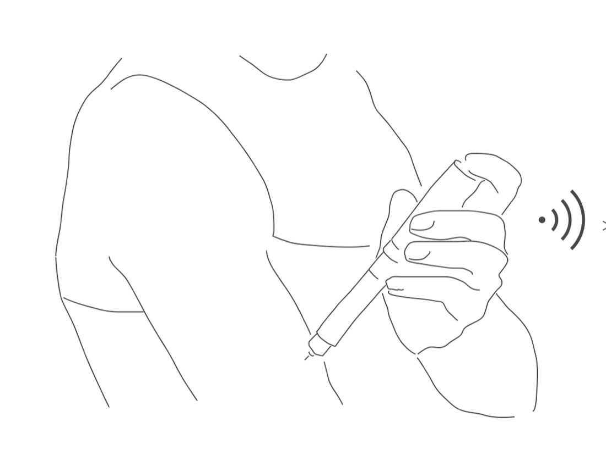
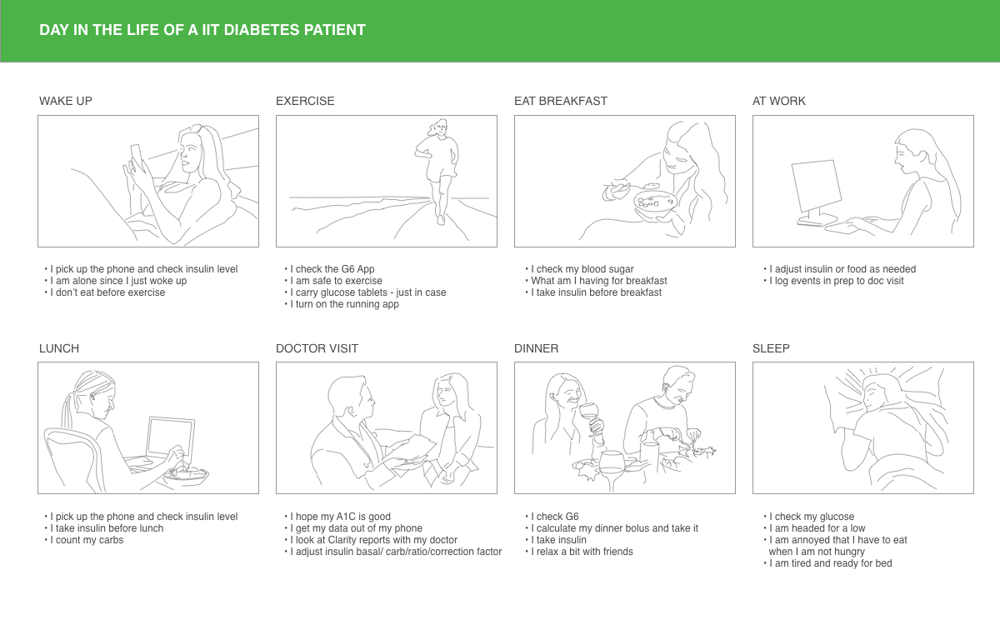
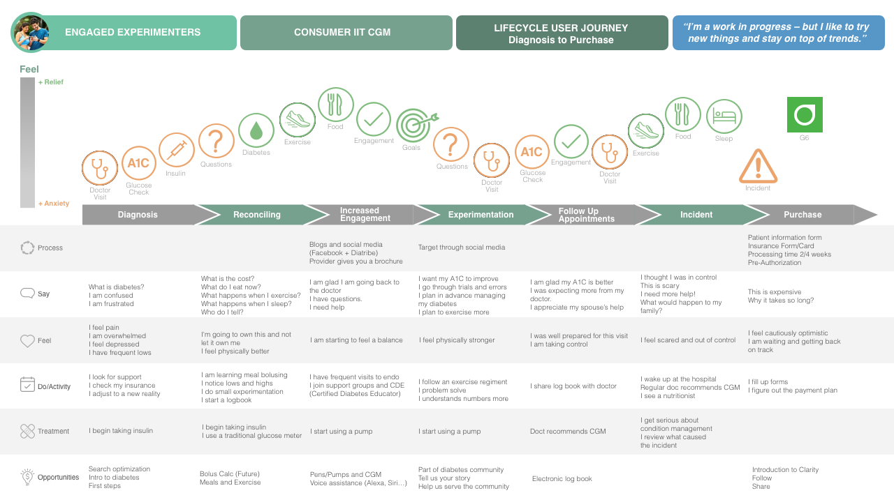
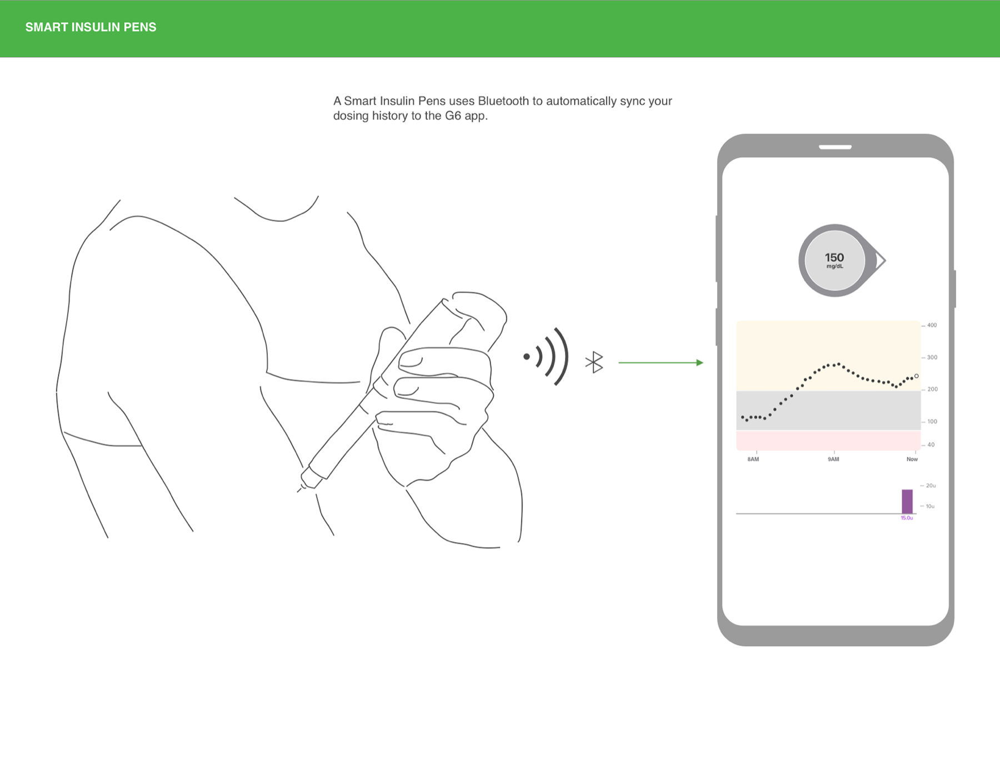
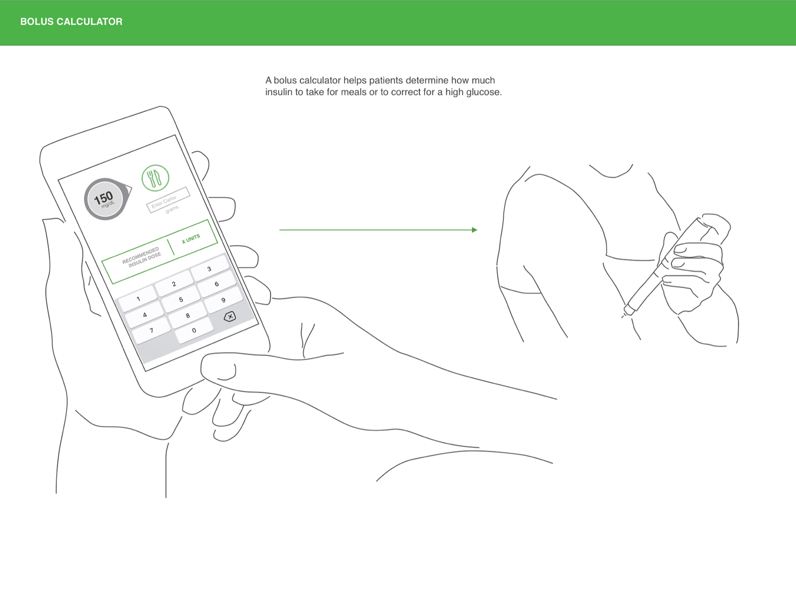
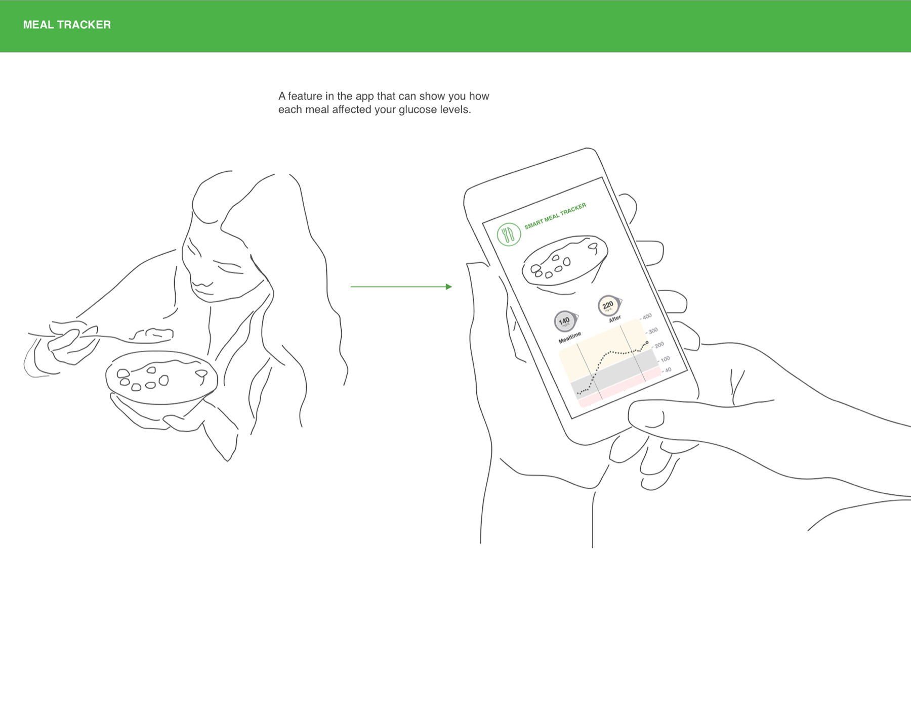
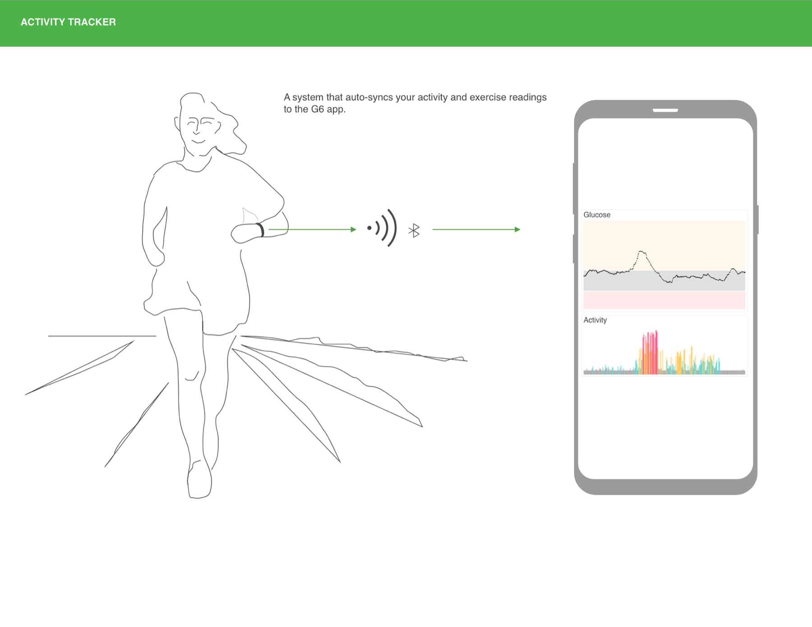
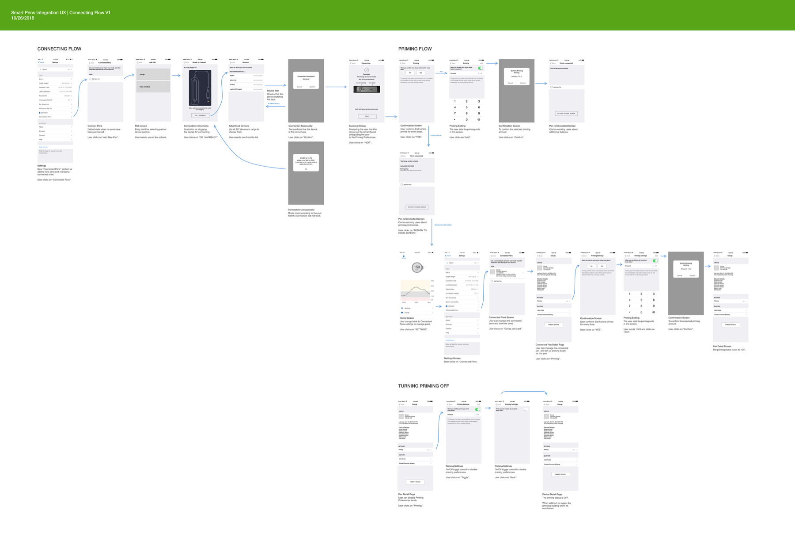

Dexcom · 2019
Dexcom G6 — User Journey + Device Integration
Mapping the whole arc of life with intensive insulin therapy — diagnosis to purchase — then designing the device integrations that turn continuous glucose data into a decision the patient can actually act on.
Client
Dexcom
Year
2019
Role
Senior UX Designer
Focus
Healthcare · Research · Mobile

The problem
A continuous glucose monitor produces a number every five minutes. That is the easy part. The hard part is everything that happens around the number — how much insulin to take, whether it is safe to run, what that meal did, why the reading is climbing at 2am. In 2019 that reasoning lived in the patient's head, in a paper logbook, or in three apps that did not talk to each other.
So the design question was not how do we display glucose. It was where does the device's data become a decision — and what has to connect to what for that to happen.
Starting with the day, not the screen
Before any interface work, I mapped a day in the life of a patient on intensive insulin therapy — eight ordinary moments, each with what the person is actually doing and saying to themselves.

The storyboard is where the design constraints came from. The very first action of the day is I pick up the phone and check insulin level — before coffee, before anything, and, as the frame notes, I am alone since I just woke up. Exercise carries its own checklist: I check the G6 App · I am safe to exercise · I carry glucose tablets — just in case. And the day ends on a genuinely bleak note: I am headed for a low · I am annoyed that I have to eat when I am not hungry.
Nobody in this storyboard is admiring a chart. Every single frame is someone making a decision under time pressure, usually alone.
The lifecycle journey
The daily view explains the product. The lifecycle view explains the business. I mapped the full arc for the Engaged Experimenters segment — consumer IIT CGM — from diagnosis through to purchase, tracking emotion on a relief-to-anxiety axis across seven stages.

The segment describes itself as a work in progress — but I like to try new things and stay on top of trends, which is why the middle of the journey trends upward: I am starting to feel a balance, then I feel physically stronger.
Then the line falls off a cliff. The Incident stage is the emotional floor of the entire map — I thought I was in control · This is scary · I need more help! · What would happen to my family? — and the activity row is blunt about what it means: I wake up at the hospital.
The doctor recommends a CGM at the emotional low point of the journey. The purchase decision is made by someone who has just been frightened — not by someone calmly comparing features.
That reframed the acquisition experience. The stage immediately after the incident is pure friction — patient information form, insurance form, pre-authorization, processing time 2/4 weeks — landing on a person whose own words are I feel cautiously optimistic · I am waiting and getting back on track. Every week of that wait is a week of doubt, and the map made that visible to the business.
Where the opportunities were
Reading the opportunity row across all seven stages produced a ranked backlog rather than a wish list — each idea anchored to the moment it would actually be needed:
- Diagnosis. Search optimization, an intro to diabetes, and a genuine first-steps path — this is where people are Googling, confused, and frightened.
- Reconciling. Bolus calculation, and help connecting meals to exercise.
- Increased engagement. Pens, pumps and CGM working together; voice assistance through Alexa and Siri.
- Experimentation. Community — tell us your story, help us serve the community.
- Follow-up appointments. An electronic logbook, replacing the paper one the patient brings to the doctor.
- Purchase. Introduce Clarity, then follow and share.
Four concepts
I designed the integration concepts as single-frame stories: the human action on the left, what the app does with it on the right. Each one closes a specific loop the storyboard had exposed.




Taking one all the way: Smart Pens
Concepts are cheap. I took the pen integration through to a complete, buildable interaction — every screen, every branch, every failure state.

- Connecting. A new Connected Pens section in Settings, then add pen → pick device (Gocap, Novo Nordisk) → plug-in instructions → the list of advertised Bluetooth devices in range.
- Verifying. A device test confirms the hardware actually matches the type selected — with a designed unable to verify path for when it does not, rather than a dead end.
- Priming. Asks whether the user primes before every dose, captures the amount, and confirms it — because priming behaviour changes what the dosing data means.
- Turning it off. A local toggle on the pen detail page, with the consequence stated plainly: when priming is switched on again, the previous reading is not maintained.
- Managing. Connected pens can be revisited, re-primed, or forgotten from the device detail page.
A connection flow for a medical device is not an onboarding screen. It is a chain where every link needs a designed failure state, because the failure is someone's insulin dose.
What the work established
The journey map gave the organization a shared picture of where a CGM actually enters someone's life — after a crisis, through a doctor, into a waiting period nobody had designed for. The day-in-the-life storyboard kept the feature work honest about the conditions it would be used in. And the Smart Pens flow proved the integration thesis end to end: that the value of the device is not the reading, but everything the reading can be connected to.